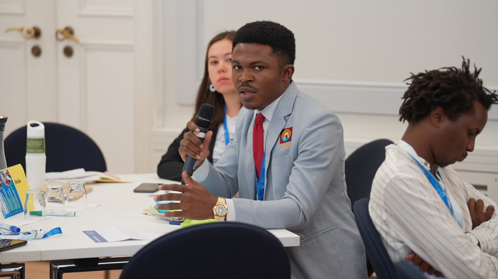
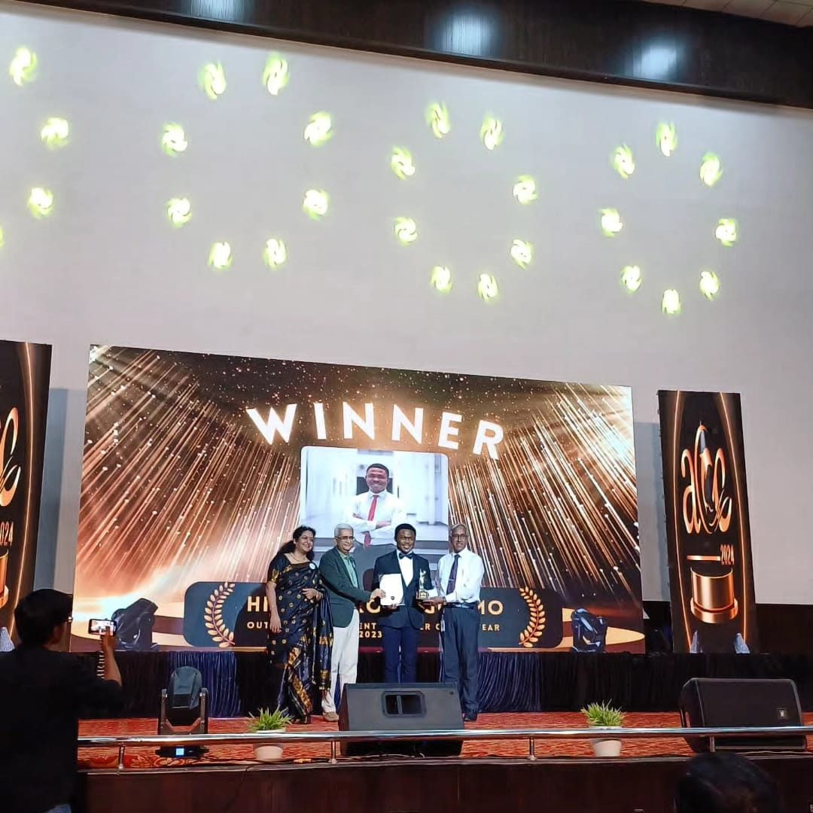

Build
Full-stack platforms and AI tools that solve real problems — student housing, crisis coordination, climate & media-literacy education.
Explore the tech →I'm Hilux Fokou Ngoumo — a security researcher and full-stack builder from Cameroon, and a UN youth leader. From fighting disinformation and online harm to coordinating humanitarian and climate response, my work lives where code meets human safety.


Cybersecurity and social impact aren't two careers for me — they're the same goal at different layers: keeping people safe and giving them a voice.
Full-stack platforms and AI tools that solve real problems — student housing, crisis coordination, climate & media-literacy education.
Explore the tech →Cybersecurity research and tooling — anti-phishing, NLP against fake news & hate speech, exam integrity. CEH, ISC2 CC, SC-900 and an MSc in Information Security.
Into the security work →Youth advocacy at the UN — IAWG co-chair, YOUNGO climate negotiator, trainer reaching 13,000+ adolescents across humanitarian settings.
See the impact →Every project carries both a technical stack and a human purpose — slice them however you like.
Real-time crisis coordination platform — incident reporting, volunteer task assignment, resource management, and AI-powered data ingestion from external sources.
A phishing-detection tool that helps everyday users spot and avoid malicious links — cybersecurity built for non-technical people.
Whether you're a security team, a research lab, or a civil-society organization — I'd love to hear what you're working on.